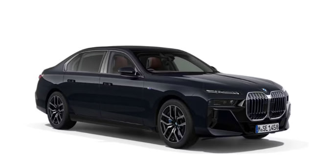
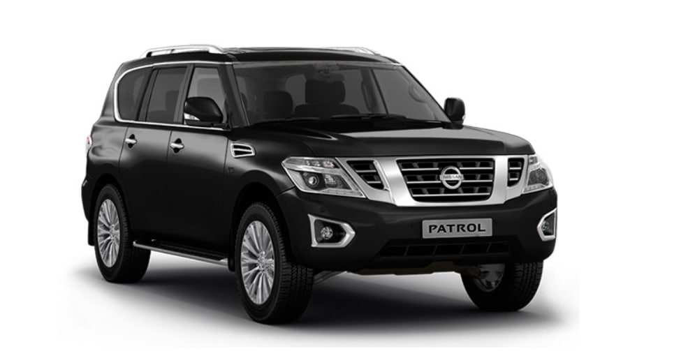
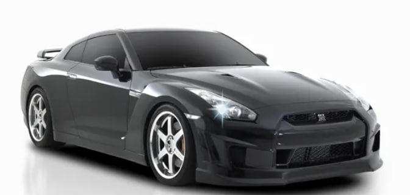

Toyota Land Cruiser 200
Toyota Land Cruiser 200 - четвертое поколение легендарного внедорожника, выпускавшееся с 2007 по 2021 год. Эта модель стала символом роскоши и надежности в классе полноразмерных внедорожников.
Land Cruiser 200 был представлен как преемник 100-й серии и значительно превзошел своего предшественника по уровню комфорта, технологий и внедорожных возможностей. Автомобиль получил совершенно новую платформу и усовершенствованную систему полного привода.
Toyota Land Cruiser 200 - это идеальное сочетание статусности и практичности. Оснащенный мощными двигателями V8, передовой системой полного привода и роскошным интерьером, он одинаково уверенно чувствует себя как в городских условиях, так и на бездорожье. Модель заслужила любовь во всем мире за свою непревзойденную надежность и долговечность.
BMW 7 Series — флагманский седан баварского концерна, олицетворяющий вершину инженерной мысли и роскоши. Шестое поколение (G11/G12) выпускалось с 2015 по 2022 год и установило новые стандарты в классе.
Это поколение 7 Series представило революционные технологии, включая систему дистанционного парковжения, углеродное шасси и инновационную информационно-развлекательную систему. Автомобиль предлагал беспрецедентный уровень комфорта благодаря пневмоподвеске с электронным управлением и роскошным материалам отделки.
Nissan Patrol - легендарный японский внедорожник, выпускаемый с 1951 года. Современное поколение Y62 представляет собой роскошный полноразмерный внедорожник с выдающимися внедорожными качествами.
Патрол Y62 оснащается мощным 5.6-литровым двигателем V8, который выдает 405 лошадиных сил. Автомобиль сочетает в себе комфорт премиального седана с проходимостью настоящего внедорожника.
Nissan Patrol - это автомобиль, который пользуется огромной популярностью на Ближнем Востоке и в других регионах с сложными дорожными условиями. Его надежность, мощь и комфорт делают его одним из самых уважаемых внедорожников в своем классе.
Nissan GT-R R35 - спортивный автомобиль, впервые представленный в 2007 году и произвевший революцию в мире высокопроизводительных автомобилей. Получил прозвище "Годзилла" за свою невероятную мощь.
R35 стал первым GT-R, не основанным на платформе Skyline. Оснащенный 3.8-литровым двигателем V6 с двойным турбонаддувом и sophisticated системой полного привода ATTESA E-TS, автомобиль демонстрировал производительность, сопоставимую с суперкарами, стоящими в несколько раз дороже.
Nissan GT-R R35 - это икона японского автопрома, доказавшая, что технологии могут превзойти традиции. С каждой модернизацией автомобиль становился еще более совершенным, устанавливая рекорды на трассах по всему миру и завоевывая сердца автолюбителей своим уникальным характером и невероятной динамикой.